run_src_full_model_with_baselines_seed42 ｜ 生成时间：2026-02-20 20:30:44 ｜ 输出目录：/Users/anykong/AAL_SD/results/runs/run_src_full_model_with_baselines_seed42/figures本文在滑坡语义分割主动学习设定下评估 AAL-SD（AD-KUCS + 动态 λ_t 控制）。在固定标注预算与固定每轮训练 epoch 的条件下（N_ROUNDS=15，QUERY_SIZE=88，EPOCHS_PER_ROUND=10），我们比较 full_model 与多类基线，并用 ALC 与最终 mIoU 衡量标注效率。
在 seed=42 的 run 中，full_model 最终 mIoU=0.7665，ALC=0.6696；最优基线（按最终 mIoU）为 BALD（mIoU=0.7685）。
研究问题 RQ1：在固定标注预算下，AAL-SD（full_model）能否提升标注效率（ALC）与最终精度（mIoU/F1）？
研究问题 RQ2：动态 λ_t（U–K 权衡）是否相对固定 λ 或规则控制带来可量化增益？
研究问题 RQ3：动态 λ_t 的变化是否与训练-验证梯度一致性等“过拟合风险证据”相关联，从而支持风险闭环机制？
研究问题 RQ4：在样本级 U–K 空间，所选样本分布是否呈现与 λ_t 设定一致的偏好？
AAL-SD 以 AD-KUCS 为基础，对每个候选样本结合不确定性 U(x) 与知识增益 K(x) 进行打分，并通过 λ_t 动态控制二者权衡。
full_model 使用“冷启动→warmup→风险闭环”的 λ_t 日程（见 manifest 中 lambda_policy），旨在早期优先覆盖不确定性、随后逐步引入知识增益并在过拟合风险上升时自适应调整。
数据与任务：滑坡语义分割（NUM_CLASSES=2），以 mIoU 与 F1 评估分割质量。
预算与轮次：TOTAL_BUDGET=1519，N_ROUNDS=15，每轮标注 QUERY_SIZE=88，初始标注比例 INITIAL_LABELED_SIZE=0.05。
训练口径：FIX_EPOCHS_PER_ROUND=True，EPOCHS_PER_ROUND=10，确保不同方法在训练预算上可比。
硬件与可复现：DEVICE=mps，DETERMINISTIC=True，seed=42。
主要指标：ALC（学习曲线面积，衡量在整个标注过程中的平均标注效率）。
辅助指标：最终 mIoU / 最终 F1（在最后一轮标注规模下的性能）；曲线稳定性（单步回撤幅度与回撤次数）。
机制证据：train–val 梯度一致性（grad_train_val_cos）与 λ_t 的相关性（Pearson r）。
在基线组（B1–B8）内，full_model 的最终 mIoU 排名为 3/8，ALC 排名为 2/8（排名仅基于本 run 中可用实验组）。
基线组内最优 ALC 方法为 BALD（ALC=0.6702，mIoU=0.7685）。
基线组内最优最终 mIoU 方法为 BALD（mIoU=0.7685，ALC=0.6702）。
full_model 相对传统基线的差值为：Random：ΔmIoU=+0.0103，ΔALC=+0.0124；Entropy：ΔmIoU=+0.0085，ΔALC=+0.0053；Core-set：ΔmIoU=+0.0244，ΔALC=+0.0168；BALD：ΔmIoU=-0.0021，ΔALC=-0.0006。
消融结果显示：固定 λ（A1）相对 full_model 的 ALC 与最终 mIoU 均下降，支持动态 λ_t 的有效性。
三类 Rule-based 控制（A3）整体弱于 full_model，其中 R2 对 ALC 影响最大，R3 对最终 mIoU 影响最大。
no_normalization 的 ALC 下降幅度最小，但最终 mIoU 仍下降，提示归一化可能主要影响排序稳定性而非最终上界。
full_model 的 λ_t 与 grad_train_val_cos 的 Pearson 相关系数为 -0.538（n≈14 个 round 点）。
该相关性提供了“风险闭环”机制的定量证据：λ_t 的调整与梯度一致性信号存在系统性关系。
在 full_model 的 L3 日志中（round=3），Top-k 与 Selected 的样本数一致（n=88），导致两者 U/K 统计相同；这意味着该轮选择近似等价于直接取 Top-k。
对比 Rule-based(R1)（round=1），Selected 的 U_mean 相对 Top-k 为 +0.1292，显示其更偏向高不确定性样本（与 Fig.5 的分布形态一致）。
为避免仅依赖最终点结论，我们统计了学习曲线的单步回撤幅度与回撤次数（见“异常/稳定性”表）。
需要强调：若某方法出现显著回撤或异常轮次，其最终点可能受随机性或训练不稳定影响，应结合异常报告与稳定性统计进行综合判断。
结论：在本次 seed=42 的单 run 中，full_model 在标注效率（ALC=0.6696）与最终性能（mIoU=0.7665，F1=0.8501）上达到强基线水平，并在消融对比中体现出动态 λ_t 与风险闭环组件的贡献。
然而，单 seed 结果不足以给出统计显著性结论；建议以 multi-seed 汇总作为论文主结论依据。
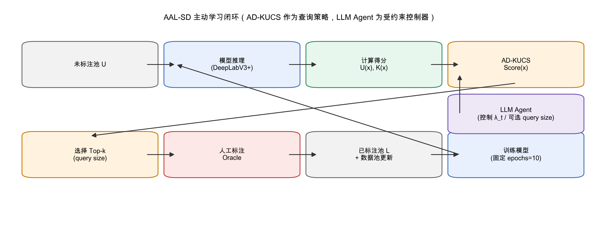
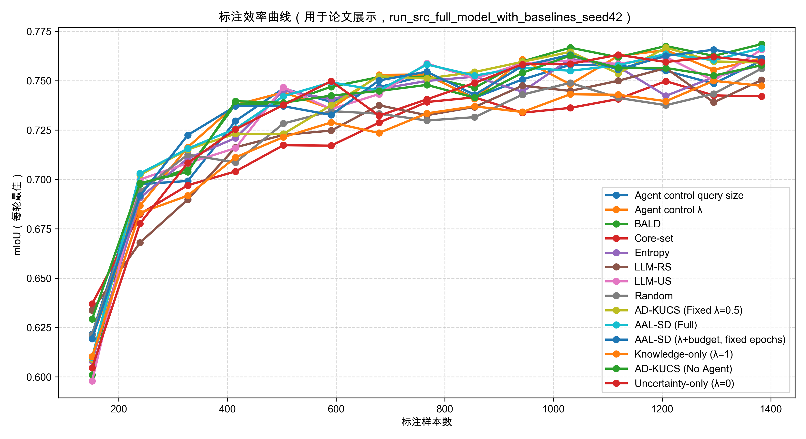
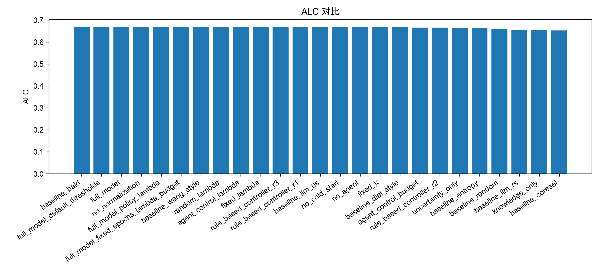
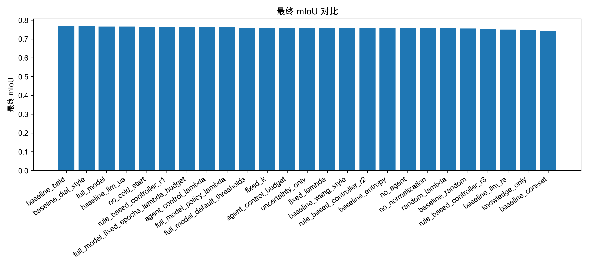
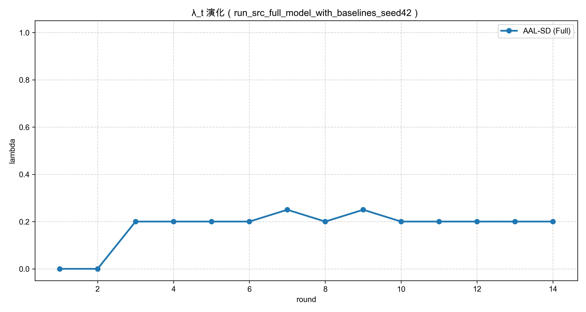
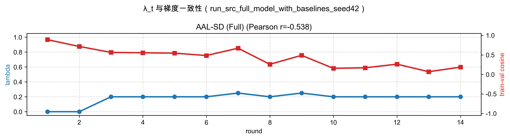
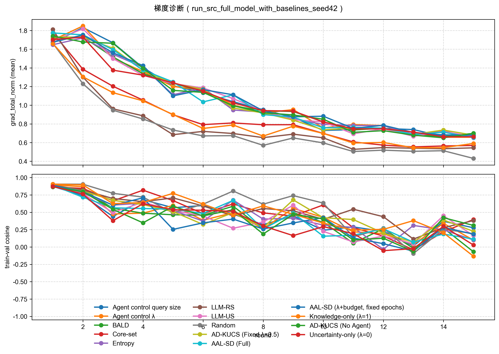
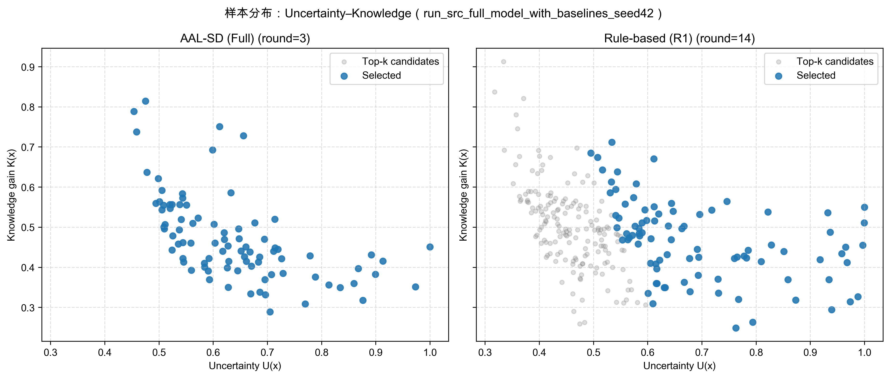
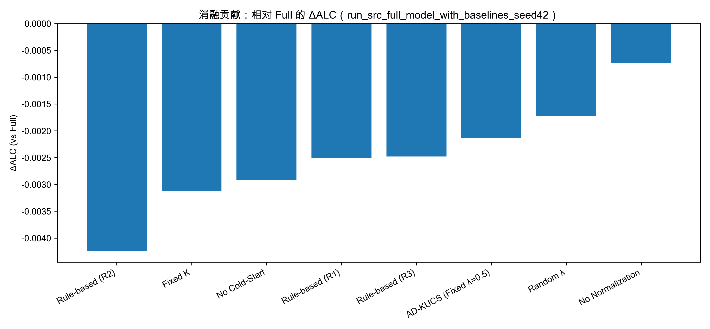
| 组别 | 方法 | experiment | 说明 | ALC | final mIoU | final F1 |
|---|---|---|---|---|---|---|
| B1 | Random | baseline_random | 随机采样基线 | 0.657204 | 0.756145 | 0.841482 |
| B2 | Entropy | baseline_entropy | 熵采样基线 | 0.664315 | 0.757964 | 0.842793 |
| B3 | Core-set | baseline_coreset | Core-Set采样基线 | 0.652746 | 0.742132 | 0.829663 |
| B4 | BALD | baseline_bald | BALD采样基线 | 0.670164 | 0.768533 | 0.851900 |
| B5 | AD-KUCS (Fixed λ=0.5) | fixed_lambda | 消融：固定λ=0.5（对应方案A1：No LLM Agent） | 0.667449 | 0.759206 | 0.844107 |
| B6 | DIAL-style | baseline_dial_style | DIAL-style基线：分簇多样性约束+不确定性 | 0.666234 | 0.767485 | 0.850998 |
| B7 | Wang-style | baseline_wang_style | Wang-style基线：两阶段U→K重排 | 0.668439 | 0.758353 | 0.843342 |
| B8 | AAL-SD (Full) | full_model | 完整模型（最佳λ日程）：R1-2 λ=0.0；R3 warmup=0.2；R4+ 风险闭环λ（不调整query_size） | 0.669580 | 0.766482 | 0.850126 |
| round | labeled_size | miou_round | f1_round | epochs_observed |
|---|---|---|---|---|
| 1 | 151 | 0.6099 | 0.6887 | 10 |
| 2 | 239 | 0.7030 | 0.7931 | 10 |
| 3 | 327 | 0.7156 | 0.8051 | 10 |
| 4 | 415 | 0.7257 | 0.8145 | 10 |
| 5 | 503 | 0.7421 | 0.8296 | 10 |
| 11 | 1031 | 0.7550 | 0.8404 | 10 |
| 12 | 1119 | 0.7578 | 0.8428 | 10 |
| 13 | 1207 | 0.7636 | 0.8477 | 10 |
| 14 | 1295 | 0.7605 | 0.8450 | 10 |
| 15 | 1383 | 0.7665 | 0.8501 | 10 |
| 组别 | 方法 | experiment | 说明 | ALC | final mIoU | final F1 | ΔALC(vs Full) | ΔmIoU(vs Full) |
|---|---|---|---|---|---|---|---|---|
| A0 | AAL-SD (Full) | full_model | 完整模型（最佳λ日程）：R1-2 λ=0.0；R3 warmup=0.2；R4+ 风险闭环λ（不调整query_size） | 0.669580 | 0.766482 | 0.850126 | 0.000000 | 0.000000 |
| A1 | AD-KUCS (Fixed λ=0.5) | fixed_lambda | 消融：固定λ=0.5（对应方案A1：No LLM Agent） | 0.667449 | 0.759206 | 0.844107 | -0.002131 | -0.007277 |
| A2 | Random λ | random_lambda | 消融：随机λ控制（无LLM） | 0.667856 | 0.756753 | 0.842010 | -0.001724 | -0.009729 |
| A3-R1 | Rule-based (R1) | rule_based_controller_r1 | 消融：Rule-based Controller R1（性能驱动） | 0.667073 | 0.762729 | 0.846945 | -0.002507 | -0.003753 |
| A3-R2 | Rule-based (R2) | rule_based_controller_r2 | 消融：Rule-based Controller R2（轮次日程） | 0.665341 | 0.758160 | 0.843490 | -0.004239 | -0.008322 |
| A3-R3 | Rule-based (R3) | rule_based_controller_r3 | 消融：Rule-based Controller R3（日程+性能微调） | 0.667101 | 0.754672 | 0.840455 | -0.002479 | -0.011810 |
| A4 | No Cold-Start | no_cold_start | 消融：去除冷启动与warmup，直接进入风险闭环 | 0.666656 | 0.764199 | 0.848130 | -0.002924 | -0.002283 |
| A5 | Fixed K | fixed_k | 消融：固定K阶段（保持coreset-to-labeled），仅保留λ闭环 | 0.666454 | 0.760344 | 0.844879 | -0.003126 | -0.006139 |
| A7 | No Normalization | no_normalization | 消融：不进行U/K归一化 | 0.668840 | 0.756922 | 0.842019 | -0.000739 | -0.009561 |
| experiment | n_points | pearson_r |
|---|---|---|
| full_model | 14 | -0.538 |
| round | labeled_size | mIoU | f1 | avg_uncertainty | avg_knowledge_gain | lambda_t | lambda_controller | miou_delta | rollback_flag | selection_source |
|---|---|---|---|---|---|---|---|---|---|---|
| 1 | 239 | 0.6099 | 0.6887 | False | agent | |||||
| 2 | 327 | 0.7030 | 0.7931 | 0.0931 | False | agent | ||||
| 3 | 415 | 0.7156 | 0.8051 | 0.0126 | False | agent | ||||
| 4 | 503 | 0.7257 | 0.8145 | 0.0101 | False | agent | ||||
| 5 | 591 | 0.7421 | 0.8296 | 0.0164 | False | agent | ||||
| 6 | 679 | 0.7492 | 0.8356 | 0.0071 | False | agent | ||||
| 10 | 1031 | 0.7567 | 0.8420 | 0.0041 | False | agent | ||||
| 11 | 1119 | 0.7550 | 0.8404 | -0.0016 | False | agent | ||||
| 12 | 1207 | 0.7578 | 0.8428 | 0.0027 | False | agent | ||||
| 13 | 1295 | 0.7636 | 0.8477 | 0.0058 | False | agent | ||||
| 14 | 1383 | 0.7605 | 0.8450 | -0.0031 | False | agent | ||||
| 15 | 1383 | 0.7665 | 0.8501 | 0.0060 | False | nan |
本 run 的 L3 数据仅在部分实验组写入（当前包含 full_model / rule_based / wang / dial 等）。
| experiment | round | Top-k n | Top-k U_mean | Top-k K_mean | Selected n | Selected U_mean | Selected K_mean |
|---|---|---|---|---|---|---|---|
| AAL-SD (Full) | 3 | 88 | 0.6377 | 0.4718 | 88 | 0.6377 | 0.4718 |
| Rule-based (R1) | 1 | 256 | 0.5706 | 0.4417 | 88 | 0.6998 | 0.4653 |
| experiment | min ΔmIoU(单步) | 发生轮次 | 回撤次数(Δ<0) | 点数 |
|---|---|---|---|---|
| Entropy | -0.0148 | 13 | 4 | 15 |
| Wang-style | -0.0114 | 10 | 3 | 15 |
| AD-KUCS (Fixed λ=0.5) | -0.0109 | 12 | 5 | 15 |
| DIAL-style | -0.0100 | 10 | 2 | 15 |
| Core-set | -0.0078 | 10 | 4 | 15 |
| Random | -0.0076 | 12 | 5 | 15 |
| BALD | -0.0057 | 9 | 3 | 15 |
| AAL-SD (Full) | -0.0056 | 9 | 4 | 15 |
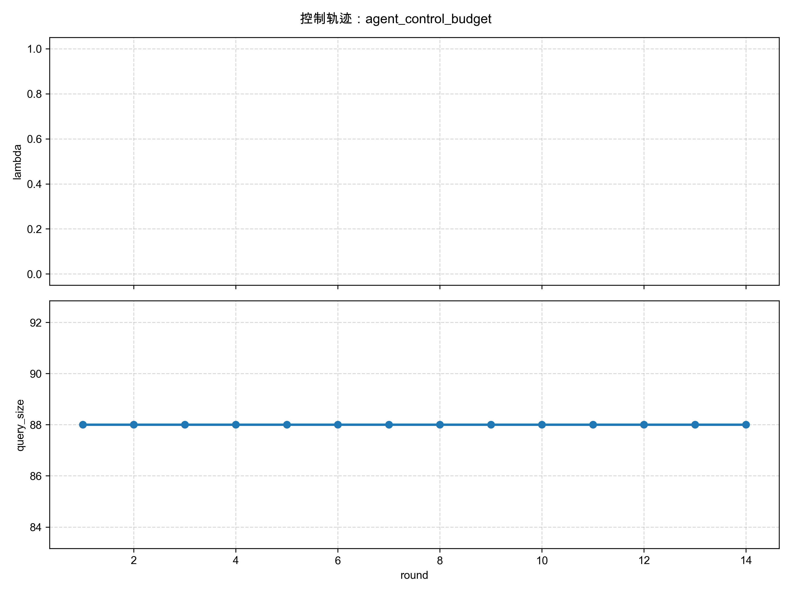
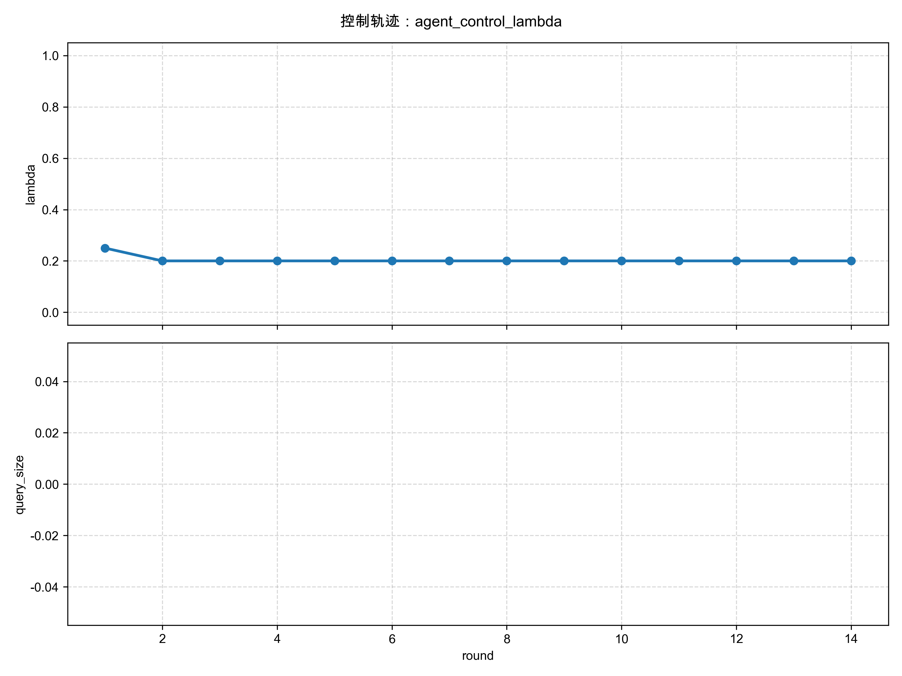
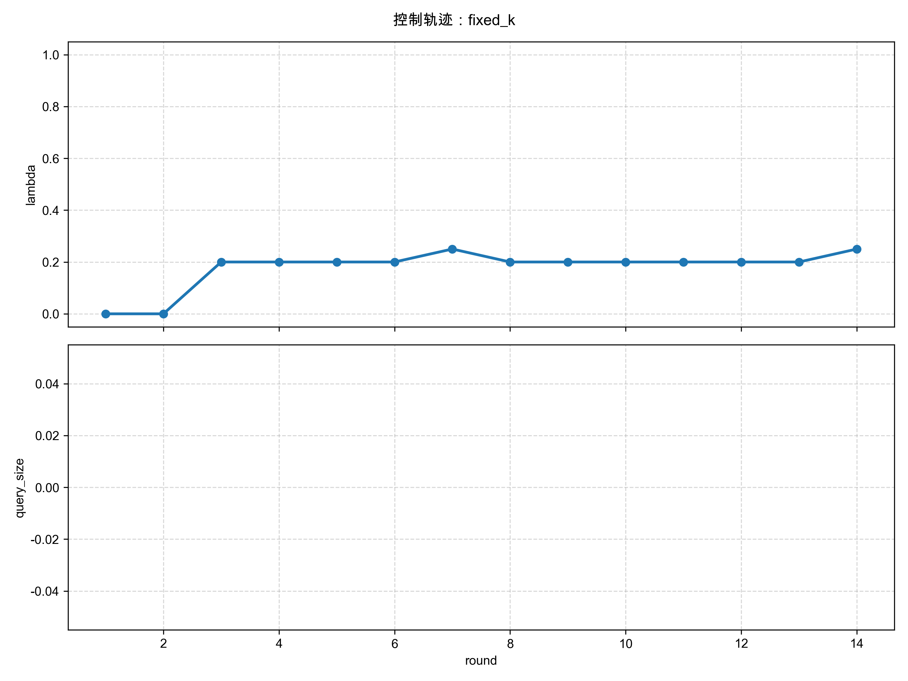
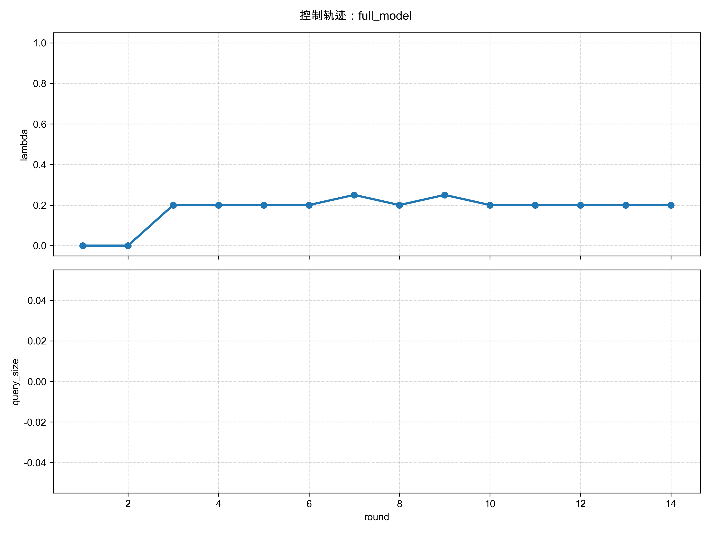
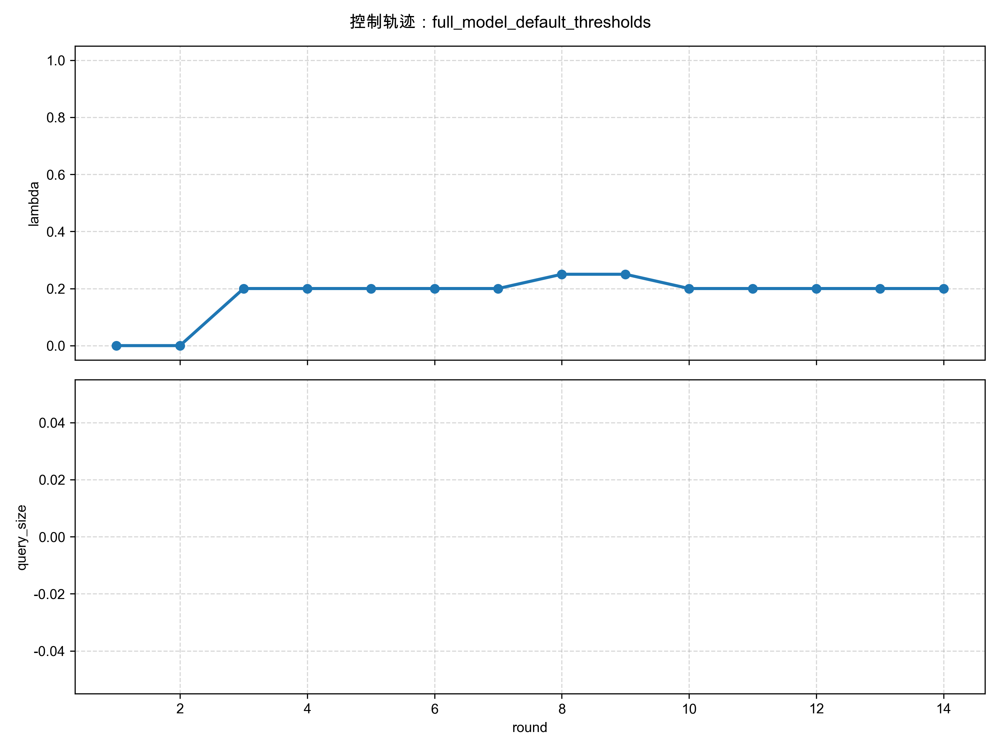
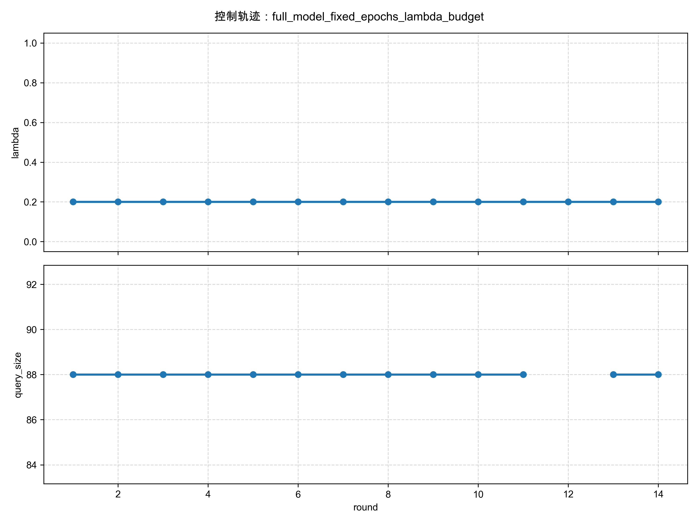
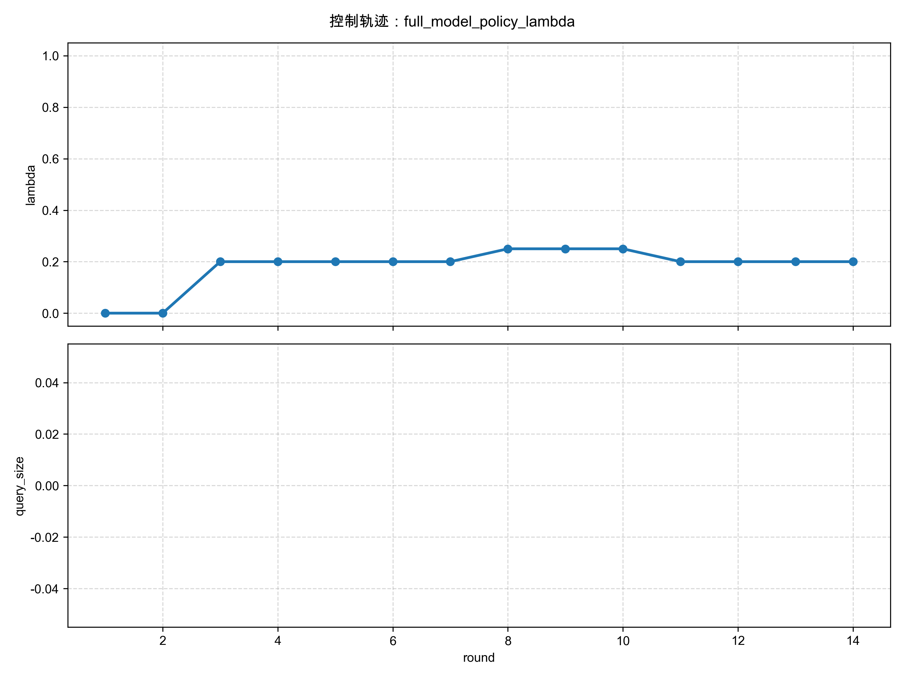
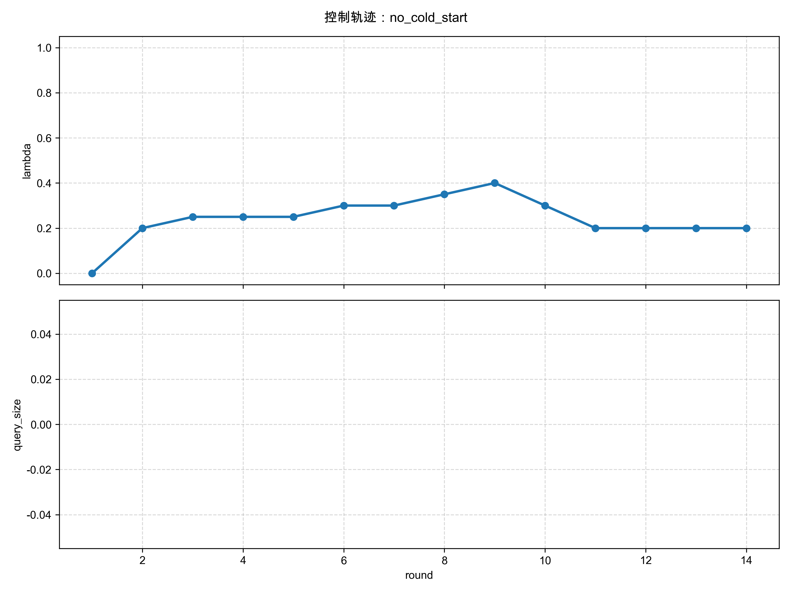
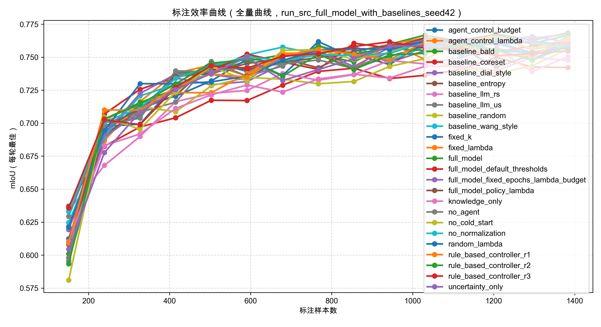